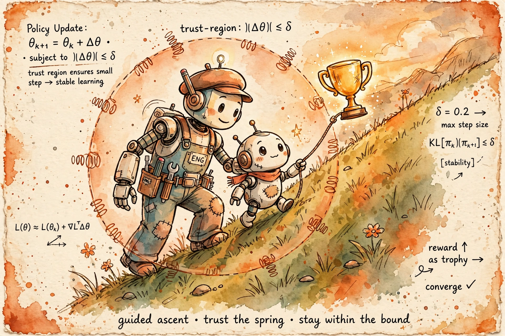

Friday, October 2, 2026
Yesterday you opened the judge and measured how it gets hacked — gold peaks, then declines against KL distance. Today you meet the optimizer that climbs that curve, and the one trick that keeps it from sprinting off the peak.

B4 — Reward Modeling: Reading the Judge's Mind. Recap: yesterday the judge became a function the optimizer can climb, and Gao's over-optimization curve showed what happens when optimization pressure runs unchecked — proxy climbs, gold peaks, then declines against d = √KL(π‖πref). Today's optimizer, PPO, lives exactly on that x-axis: every design choice in PPO is about how far along d the policy may move per update. B3 — the RLHF pipeline: you saw PPO's objective written as one line in the three-stage pipeline; today that line becomes the whole lesson. Spaced retrieval, as promised: remember the masked-CE averaging subtlety from SFT — "watch token count, not example count"? It returns today, because PPO for LLMs is a token-level loss, and the same averaging decision quietly changes what the clip constrains.
Vanilla policy gradient says: take actions that got reward, in proportion to how surprising they were — ∇J = E[r(θ) · Â · ∇log π], with r(θ) = πθ/πθ_old correcting for the fact that the data came from yesterday's policy. The problem is staleness: after one gradient step the policy has moved, but your sampled completions still came from the old one. One lucky batch — a fluky token with a huge advantage — and a single update can shove that token's probability from 1% to 40%. Now the policy lives where the reward model never trained. That is B4's off-distribution exploitation wearing a different name: the optimizer sprinting past the peak on Gao's curve in one step. TRPO's answer (Schulman et al., 2015) was a hard KL constraint on every update — principled, second-order, expensive. PPO's answer (Schulman et al., 2017) keeps the trust-region idea and enforces it with a clip. The intuition is a leash: let any token's probability move, but never more than (1±ε) times its old value per update. Clipping turns "climb the reward hill" into "climb, but only one leashed step at a time." A trust region you can implement in ten lines — which is exactly why it won.
The ratio rt(θ) = πθ(at|st) / πθ_old(at|st) measures how far this token's probability has moved since the data was sampled; the clip chops that ratio to [1−ε, 1+ε] (ε = 0.2 is the industry default); the min() takes the pessimistic one. Read the two cases, because the asymmetry is the whole design. If Ât > 0 — a good token, better than expected — the objective wants rt to grow, but the min() caps the upside at (1+ε)Ât. The optimizer cannot get rich on one token: the update that would push a token from 1% to 40% probability in a single step gets clipped, and the surplus gradient is simply dropped. If Ât < 0 — a bad token, worse than expected — the same logic applies in mirror: push the probability below 1−ε and the objective goes flat at (1−ε)Ât, no extra credit for overshooting. But move the wrong way — raise a bad token's probability, or lower a good one's — and the min() picks the unclipped term, delivering the full penalty. The asymmetry is exact: the clip bounds how much you can gain in one update, never how much you can lose. Every step is capped on the upside and honest on the downside — which is precisely why the policy cannot sprint off Gao's peak in a single update.
The Staff-level read: notice the memory bill — policy, reference, reward model, and value head all live in GPU memory at once (the memory-budget line in the F1 design doc), and notice that stages 1 and 4 want opposite things: generation wants throughput, the update wants fresh data.
First, the advantage. Raw returns are far too noisy to learn from — one lucky completion swamps the signal — so PPO learns from how much better than expected each token was. The value head Vφ(st) — a second scalar head, usually initialized from the reward model — predicts expected return from each state, and the TD error δt = rt + γV(st+1) − V(st) measures the surprise. GAE (Schulman et al., 2015) blends n-step surprises:
λ = 1 is full Monte Carlo (unbiased, high variance); λ = 0 is one-step TD (biased, low variance); λ ≈ 0.95 is the standard compromise. The value loss, LVF = E[(Vφ(st) − Vtarget)²] — often with its own clip on the value update — is not a side quest: a bad value estimate injects bias into every advantage, and the advantage is the entire learning signal.
Second, the two KLs and why both exist. The clip constrains movement relative to πθ_old — this iteration's trust region, guarding the step; the per-token KL penalty against πref constrains distance from the SFT anchor — B4's d-axis, guarding the journey inside the reward model's competence zone. PPO's paper actually shipped an adaptive-KL variant too; practice converged on clip plus KL penalty, because one mechanism was never enough.
Third, the SFT retrieval, now with teeth. PPO's loss is token-level, averaged over the batch's tokens, and the SFT lesson returns verbatim — watch token count, not example count. A 4k-token completion contributes 4k clipped ratios to the average; advantage whitening (normalizing  per batch) exists precisely so one prompt's reward scale can't dominate the update. Same averaging subtlety, harder context — spaced retrieval doing its job.
The practices that make or break LLM PPO runs: advantage whitening — normalize  per batch, or one prompt's reward scale dominates the update; KL controllers — adaptive β targeting a KL budget, because a fixed β is either a choke chain (KL collapses to zero, reward flat, the policy never leaves home) or a decoration (KL runs away, you're right of Gao's peak and the clip can't save you); clip discipline — ε = 0.2 standard, sometimes annealed late in training, and watch the fraction of clipped ratios as a health metric (near 100% clipped means the trust region binds everywhere — updates are fighting the leash); no entropy bonus — textbook PPO adds one for exploration, but in LLMs it fights the KL anchor and buys gibberish diversity nobody wants; value-head init from the RM — a randomly initialized Vφ poisons every advantage for the first hundred steps, so start it from the reward model that already scores states.
Debug checklist. Reward climbing while human eval degrades → you're right of the peak; raise β or early-stop on gold (B4's curve, now operational). PPO stable for 200 steps then diverging → too many epochs on stale rollouts, ratios drifting past the clip; regenerate more often. Value loss exploding → check the V init and reward scale before touching the policy LR. The Staff one-liner: PPO's hyperparameters are a trust-region budget, not a tuning lottery — every knob answers "how far may the policy move, and on whose authority?"
B6 — DPO: the entire clip/value/GAE apparatus is what DPO deletes — its derivation starts from the closed-form optimal policy under the KL constraint and turns RL into classification; you can't feel why DPO spread without today's pain. B7 — GRPO/RLOO: GRPO drops the value head entirely and uses group-normalized rewards as the baseline — today's GAE section is the thing GRPO replaces. B8 — RL infra: the rollout loop above is why generation throughput (vLLM, async rollout workers) is the system bottleneck; B8 is this lesson at data-center scale. B9 — RLVR: swap the learned judge for a deterministic verifier and the reward becomes exact — the KL machinery stays, the hacking math changes. F1 — design training on 10k GPUs: four model copies (policy, reference, reward, value) × optimizer states × rollout buffers is the memory-budget line in the Staff design doc. A6/A7: PPO's K-epoch minibatch reuse is exactly where large-batch dynamics and mixed-precision numerics bite in RL.
"Why does PPO clip, and why does it work for LLMs?" → "Vanilla policy gradients are on-policy: after one update your data is stale, and one lucky batch can shove a token's probability 50× — straight into regions the reward model never learned, which is reward hacking by another name. PPO's clipped surrogate, L = E[min(rÂ, clip(r, 1±ε)Â)], bounds how much you can gain in one update while leaving losses honest: push a good token's probability too far and the objective plateaus — no extra credit — but move the wrong way and the full penalty applies. That's a trust region in ten lines. On top of that, LLM PPO folds a per-token KL penalty against πref into the reward — the clip guards each step, the KL penalty guards the journey along Gao's d-axis. GAE with λ ≈ 0.95 trades bias for variance in the advantage, and the value head — initialized from the reward model — is half the algorithm, not a side quest." Say it once from memory before the workout and node B5 is yours.
PPO: The Clip That Tames the Optimizer — Letter brief · Deep-dive study guide · Full curriculum
— The Infra Notebook